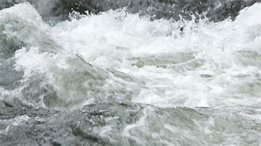

Experience the Thrill of White Water Rafting
Join us for an unforgettable adventure on the Urubamba River!
About Us

Our aim is to make your experience on the water one to remember. We want to bring families and friends together on an adventure that will take you out of your normal day-to-day life and give you the chance to truly experience the beauty of nature.
Our History
We are a proud family-founded and run company focused on bringing people together through the joy of white water rafting. Our founder, Brent, grew up rafting on the Urubamba River and wanted to share that same joy with others.
Adventure Awaits You!